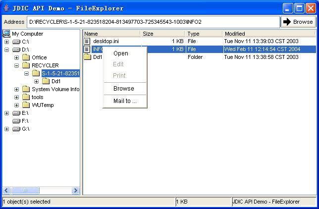

| Deploying a JDIC Application Using Java Web Start |
To give the implementation details of how to deploy a JDIC application using Java Web Start, we'll use a JDIC demo application "FileExplorer" as a sample application. This is currently deployed in the JDIC home page. The source code of FileExplorer is provided under thedemo/FileExplorersubdirectory in both the binary and source distributions.
FileExplorer is a simple cross-platform file explorer that allows users to view the files and folders on a local disk. It uses the JDIC APIs to automate launching the default file handler for a particular file type, the system default browser, and the system mailer. Figure 1 demonstrates the application running on Windows XP.
Figure 1. FileExplorer running on Windows XP.

2. Implement a JNLP fileExample:
- Create a
fileexplorer.jarfile with the generated FileExplorer .class files and image resource files using thejartool:
For Windows:C:\temp\FileExplorer>jar cvf fileexplorer.jar *.class images/*For Linux/Unix:
/temp/FileExplorer>jar cvf fileexplorer.jar *.class images/*- Create a platform-dependent
jdic-native.jarfile with the platform-dependent JDIC native files using thejartool:
For Windows:C:\jdic\dist\windows>jar cvf jdic-native.jar *.dll *.exeFor Linux/Unix:
/temp/jdic/dist/linux>jar cvf jdic-native.jar *.so mozembed-* defmailer.propertiesNOTE: the native jar file name must be
jdic-native.jar. Since the application needs to retrieve the native files after the jar file is unjar'ed by Java Web Start.
- Put the generated JAR files and platform-dependent
jdic.jarfiles in the appropriate folders.
http://localhost:8080/fileexplorer (root directory)
lib/fileexplorer.jar: contains the Java class files and image resource files of FileExplorer.lib/win32/jdic.jar: contains the JDIC Java class files for Windows.lib/win32/jdic-native.jar: contains the JDIC native libraries for Windows.lib/linux/jdic.jar: contains the JDIC Java class files for Linux.lib/linux/jdic-native.jar: contains the JDIC native libraries for Linux.lib/solaris/jdic.jar: contains the JDIC Java class files for Solaris.lib/solaris/jdic-native.jar: contains the JDIC native libraries for Solaris.
Below is a sample3. Sign the JAR filesfileexplorer.jnlpfile for the FileExplorer application:
1 <?xml version="1.0" encoding="utf-8"?> 2 <!-- JNLP File for JDIC Demo Application (FileExplorer) --> 3 <jnlp spec="1.0+" codebase="http://localhost:8080/fileexplorer" href="fileexplorer.jnlp"> 4 <information> 5 <title>JDIC FileExplorer Example</title> 6 <vendor>Your website</vendor> 7 <description>FileExplorer Example App.</description> 8 <description kind="short">FileExplorer Example App.</description> 9 <offline-allowed/> 10 </information> 11 <security> 12 <all-permissions/> 13 </security> 14 <resources> 15 <j2se version="1.4+"/> 16 <jar href="lib/fileexplorer.jar"/>17 </resources> 18 <resources os="Windows"> 19 <jar href="lib/win32/jdic.jar"/> 20 <nativelib href="lib/win32/jdic-native.jar"/> 21 </resources>22 <resources os="SunOS">23 <jar href="lib/solaris/jdic.jar"/> 24 <nativelib href="lib/solaris/jdic-native.jar"/> 25 </resources> 26 <resources os="Linux"> 27 <jar href="lib/linux/jdic.jar"/> 28 <nativelib href="lib/linux/jdic-native.jar"/> 29 </resources> 30 <application-desc main-class="FileExplorer"/> 31 </jnlp>
Note:
- In line 3, the
codebaseattribute and in lines 4 through 10, the attributes specified in theinformationtag should be changed accordingly by the user.
- A JDIC application is required to load a system library upon execution, it needs to have full access to the user's machine. The
securitytag in lines 11 through 13 shows how an application can request full access to a client's environment. In order for Java Web Start to grant this level of access, all the application's JAR files must be digitally signed (see below step 3).
- The
resourcestag in lines 14 through 17 specifies the application JAR file, which contains cross-platform Java class files and image resource files.
- The
resourcestags in lines 18 through 29 load the appropriate JDIC JAR files for a particular operating system (Windows/Linux/Solaris).
Theosattribute specifies the operating system for which the resources element should be considered,which is based on the end user'sos.nameJava system property.
Theresourcestags could also allow resources for use only by a particular architecture, such as x86 and sparc, by specifying thearchattribute, which is based on the end user'sos.archJava system property. Since JDIC depends on the operation system, not on the architecture, thearchattribute is not used.
- The
nativelibtags in lines 20, 24, and 28 tell Java Web Start that the specified JAR file contains native libraries. For JDIC, the native JAR files contain some.dllfiles for Windows, or some.sofiles for Linux/Solaris.
- In line 30, the
main-classattribute in theapplication-desctag specifies the main class name, by which Java Web Start finds the class containing themainmethod to execute.
Each JAR file must be signed with your own key certificate. Details on the JAR certification can be found at Security and Code Signing.4. Deploy and test the JNLP application
Clicking the link should activate Java Web Start and download the JAR files (Note: If you haven't associated .jnlp files with the
- Set up a local web server and put the
fileexplorerdirectory in the root directory.- Open a Web browser to the following URL and click on the following link:
javawsexectuable, you should choose thejavawsexecutable to open it.) After that, FileExplorer launches.